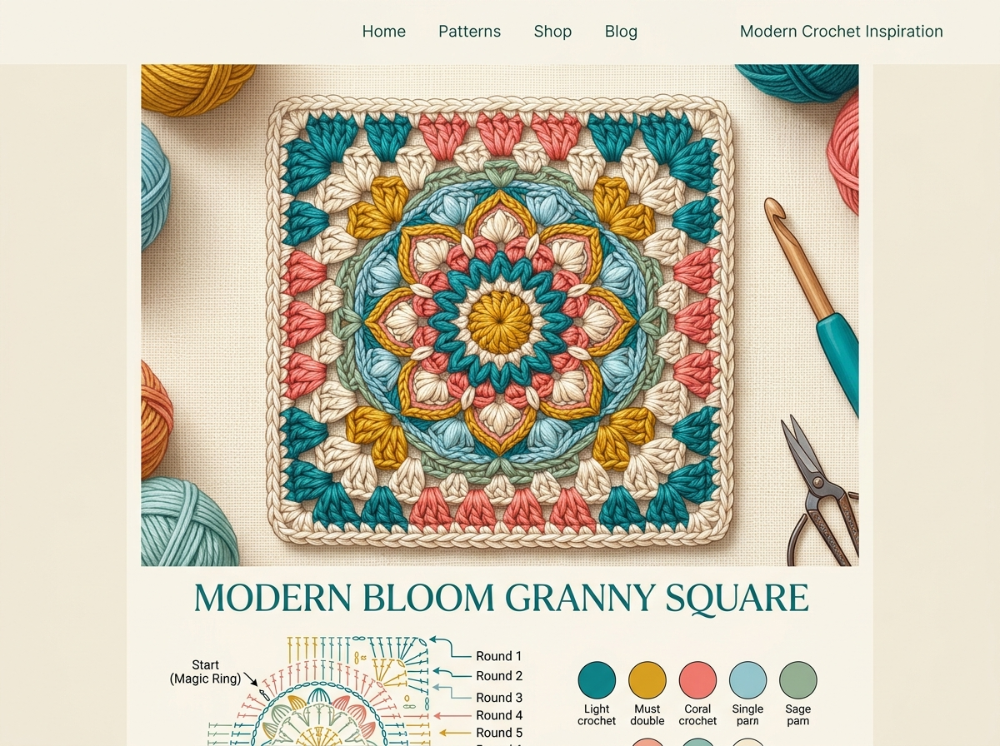

Granny Square คือลวดลายโครเชต์สัญลักษณ์ที่มีมาตั้งแต่ปี 1800s และยังคงเป็นที่นิยมมาถึงปัจจุบัน ชื่อนี้มาจากคุณยายชาวตะวันตกที่มักถักดอกเหล่านี้เพื่อนำไปต่อเป็นผ้าห่ม ความสวยงามและความหลากหลายในการประยุกต์ใช้ทำให้แกรนนี่สแควร์กลายเป็นลายที่นักถักทุกระดับต้องรู้จัก
สารบัญ
🧺 1. อุปกรณ์ที่ต้องเตรียม
| อุปกรณ์ | รายละเอียด |
|---|---|
| 🧶 ไหมพรม | ไหมฝ้าย DK หรือ Worsted สีต่างๆ (แนะนำ 3–5 สี) น้ำหนัก 50g ต่อสี |
| 🪝 เข็มโครเชต์ | 4.0–5.0 มม. ขึ้นกับไหมที่เลือก อ่านฉลากไหม |
| ✂️ กรรไกร | สำหรับตัดด้ายหลังสลับสี |
| 🧵 เข็มปลายทื่อ | สำหรับซ่อนปลายด้ายจำนวนมาก (งาน Granny มีปลายด้ายเยอะ) |
| 📍 Stitch Marker | ใช้หนีบมุมของดอก ช่วยนับได้ง่ายขึ้น |
| 💦 สเปรย์น้ำ + เข็มหมุด | สำหรับ Blocking หลังถักเสร็จ |
📖 2. คำย่อที่ใช้
| ตัวย่อ | ความหมาย |
|---|---|
| ch | Chain — ถักห่วงโซ่ |
| sl st | Slip Stitch — ห่วงลื่น ใช้ปิดรอบหรือเชื่อมจุด |
| dc | Double Crochet — ลายสองชั้น หลักของ Granny Square |
| ch-sp | Chain Space — ช่องว่างจากการถัก ch ไว้ |
| sp | Space — ช่องว่าง |
| join | เชื่อมต่อ — sl st เข้ากับห่วงแรก |
| fasten off | ปิดงาน ตัดด้าย ร้อยปิด |
⭕ 3. รอบที่ 1: สร้างใจกลางดอก
ไหม: สีแรก (ใจกลาง)
วิธีที่ 1: เริ่มด้วย ch 4 + sl st
ถัก ch 4 → sl st เข้าห่วงแรก สุดสาย → ได้เป็นวงกลมเล็กๆ 4 ห่วง
จากนั้นถัก ch 3 (นับเป็น dc แรก) → dc อีก 2 ครั้ง ในวง → ch 2 → dc 3 ครั้ง ในวง → ch 2 → ทำซ้ำรวม 4 ชุด → sl st ปิดรอบที่ ch บนสุดของ ch-3 แรก → fasten off สีแรก
วิธีที่ 2: เริ่มด้วย Magic Ring (แนะนำ)
ทำ Magic Ring → ถัก ch 3 → dc 2 ในวง → ch 2 → dc 3 ในวง → ch 2 → ทำซ้ำรวม 4 ชุด → sl st ปิด → ดึงปิดวง Magic Ring → fasten off
✅ วิธี Magic Ring ดีกว่า เพราะไม่มีรูตรงกลาง ดอกจะแน่นสวยงามกว่า
จะได้ดอกเล็กๆ มีกลุ่ม dc 3 ตัว รวม 4 กลุ่ม คั่นด้วยช่อง ch-2 ที่มุมทั้ง 4 ด้าน นี่คือรากฐานของดอก Granny Square
🌸 4. รอบที่ 2: ถักกลีบดอกแรก
เปลี่ยนไหม: สีที่สอง (กลีบดอก)
ต่อไหมสีใหม่ที่มุม ch-2
สอดเข็มเข้าในช่อง ch-2 ตรงมุมใดก็ได้ → sl st ต่อไหมสีใหม่เข้า → ถัก ch 3 (= dc แรก) → dc 2 → ch 2 → dc 3 ทั้งหมดในช่อง ch-2 เดิม = มุมแรกเสร็จ!
ถักด้านข้างระหว่างมุม
ถัก ch 1 → สอดเข็มเข้าในช่องว่างระหว่างกลุ่ม dc ของรอบที่ 1 → ถัก dc 3 → ch 1 = ด้านข้างหนึ่งด้าน
ทำมุมต่อไป
เมื่อถึงช่อง ch-2 มุมถัดไป → ถัก dc 3, ch 2, dc 3 ในช่องมุม → ทำซ้ำจนครบ 4 มุม และ 4 ด้าน → sl st ปิด → fasten off สีที่สอง
🌺 5. รอบที่ 3: ขยายดอกให้ใหญ่ขึ้น
เปลี่ยนไหม: สีที่สาม หรือสีเดิม
ต่อไหมที่มุม → ถัก (dc 3, ch 2, dc 3) ที่มุม → ch 1 → dc 3 ในช่อง ch-1 ด้านข้างชุดแรก → ch 1 → dc 3 ในช่อง ch-1 ด้านข้างชุดที่สอง → ch 1 → ทำมุมต่อไป → ทำซ้ำจนครบ 4 ด้าน → sl st ปิด → fasten off
ผลลัพธ์: แต่ละด้านมี 2 กลุ่ม dc เรียงกัน, มุมยังคงเป็น (dc 3, ch 2, dc 3)
⬛ 6. รอบที่ 4: ถักขอบสี่เหลี่ยม
นิยมใช้สีเข้มหรือสีเดิมทำขอบ
ถักเหมือนรอบที่ 3 เพิ่มกลุ่ม dc อีก 1 กลุ่มในแต่ละด้าน → แต่ละด้านจะมี 3 กลุ่ม dc เรียงกัน, มุมยังคงเป็น (dc 3, ch 2, dc 3) → sl st ปิด → fasten off
ขนาดประมาณ: ~10 cm × 10 cm ขึ้นกับขนาดเข็มและไหมที่ใช้
ทุกรอบที่เพิ่มขึ้น = แต่ละด้านมีกลุ่ม dc เพิ่มขึ้น 1 กลุ่ม มุมคง (dc 3, ch 2, dc 3) เสมอ จะถักกี่รอบก็ได้ตามต้องการ
📐 7. รอบที่ 5+: ต่อขนาดได้ไม่สิ้นสุด
| จำนวนรอบ | กลุ่ม dc ต่อด้าน | ขนาดโดยประมาณ (DK + เข็ม 4.0) |
|---|---|---|
| 2 รอบ | 1 กลุ่ม | ~6 cm |
| 3 รอบ | 2 กลุ่ม | ~8 cm |
| 4 รอบ | 3 กลุ่ม | ~10 cm |
| 5 รอบ | 4 กลุ่ม | ~12 cm |
| 6 รอบ | 5 กลุ่ม | ~14 cm |
| 10 รอบ | 9 กลุ่ม | ~22 cm (ดอกใหญ่) |
🎨 8. การสลับสีไหมพรม
วิธีที่ 1: Fasten Off แล้วต่อสีใหม่
จบรอบ sl st ปิด → ตัดด้ายเหลือ 15 cm → ร้อยปิด → เริ่มสีใหม่โดย sl st เข้าที่ช่องมุม → เป็นวิธีที่ง่ายที่สุด มีปลายด้ายเยอะแต่ควบคุมสีได้ดีที่สุด
วิธีที่ 2: Standing Stitch (ไม่มีปลายด้ายเยอะ)
ทำปมลื่นสีใหม่บนเข็ม → สอดเข็มเข้าในช่องที่ต้องการ → ดึงด้ายขึ้น → ถัก dc ปกติ โดยไม่ต้องทำ sl st เชื่อมก่อน เหมาะสำหรับผู้มีประสบการณ์
วิธีที่ 3: Carry Along (พาไหมไปด้วย)
ถักสีใหม่ทับไหมเก่าไปด้วย (Carry the yarn) ใช้กับงานที่สลับสีบ่อยๆ เช่น ลายทาง เพื่อลดจำนวนปลายด้ายที่ต้องซ่อน
งาน Granny Square จะมีปลายด้ายจำนวนมากจากการสลับสี ซ่อนปลายด้ายอย่างน้อย 5–6 ซิกแซกทั้งสองทิศทาง ไม่ใช่แค่ผ่านไปทิศเดียว มิฉะนั้นปลายจะหลุดออกมาเมื่อซัก
🔗 9. วิธีต่อดอกแกรนนี่เข้าด้วยกัน 3 แบบ
Whip Stitch (เย็บแบบเย็บกระเป๋า)
วางดอกสองดอกหน้าชนกัน ใช้เข็มปลายทื่อร้อยด้ายผ่านห่วงขอบทั้งสองดอกพร้อมกัน เย็บวนซ้ำทุกห่วง → ได้รอยต่อที่เห็นเส้นด้ายที่ขอบ เหมาะสำหรับงานที่ต้องการรอยต่อเป็นจุดเด่น
Single Crochet Join (ต่อด้วย sc)
วางดอกหน้าชนกัน ถัก sc ผ่านห่วงขอบทั้งสองดอกพร้อมกัน → ได้รอยต่อที่เห็นสันนูน ดูเป็นเอกลักษณ์ เป็นที่นิยมมาก
Join As You Go (JAYG) — ต่อระหว่างถัก
ขณะถักรอบสุดท้ายของดอกที่ 2 เมื่อถึงด้านที่ต้องติดกับดอกที่ 1 → แทนที่จะ ch 1 ในแต่ละช่องด้านข้าง → sl st เข้าช่องด้านข้างของดอกที่ 1 แทน → ต่อกันได้ทันทีโดยไม่ต้องเย็บเพิ่ม เร็วที่สุดแต่ฝึกนานกว่า
🌈 10. การวางแผนจัดสี
Planned Colorwork — วางแผนล่วงหน้า
วาดตารางบนกระดาษ วางสีแต่ละดอกให้สมดุล เช่น สีเข้มสลับสีอ่อน, สีเย็นข้างสีอุ่น ถ่ายรูปม้วนไหมวางข้างกันเพื่อดูผลรวมก่อนถัก
Random Colorwork — สุ่มสี
ดึงไหมจากถุงสุ่มโดยไม่ดู ได้ผลแบบ "Boho" ที่หลายคนชื่นชอบ ตรวจสอบหลังต่อแล้วว่าสีเดียวกันไม่ติดกัน 2 ดอก
Ombre / Gradient — ไล่สี
เรียงสีจากอ่อนไปเข้ม เช่น ขาว → ชมพูอ่อน → ชมพู → แดง ตามทิศทางที่ต้องการ ได้ผลงานที่ดูมีระดับและศิลปะ
💧 11. การ Blocking ให้ดอกได้ทรง
Blocking คือการใช้น้ำและแรงดึงเพื่อให้ชิ้นงานได้รูปทรงที่สมบูรณ์ สำคัญมากสำหรับ Granny Square ที่ต้องต่อกันหลายดอก
Wet Blocking (แช่น้ำ)
แช่ดอกในน้ำเย็น 10–15 นาที → บีบน้ำออกเบาๆ (ไม่บิด) → วางบนผ้าขนหนู → หมุดยึดมุมทั้ง 4 ของดอกให้ตรงตามขนาดที่ต้องการ → ทิ้งไว้ให้แห้งสนิท เหมาะกับ Cotton และ Wool
Steam Blocking (ไอน้ำ)
หมุดยึดดอกให้ได้ทรงก่อน → ใช้เตารีดไอน้ำ "ลอย" เหนือชิ้นงาน ~5 cm อย่าวางเตารีดลงโดยตรง → ปล่อยไอน้ำผ่านชิ้นงาน → ทิ้งให้เย็นและแห้งก่อนถอดหมุด เหมาะกับ Acrylic
🛍️ 12. ไอเดียชิ้นงานจากแกรนนี่สแควร์
ผ้าห่ม (Blanket)
ต่อ 40–100 ดอกขึ้นกับขนาดที่ต้องการ งานชิ้นใหญ่แต่ถักทีละดอกไม่เหนื่อย
กระเป๋า (Bag)
ต่อ 4–6 ดอกต่อแผ่น ต่อ 2 แผ่น เย็บประกอบ ใส่ซับในพร้อมใช้งาน
เสื้อคาร์ดิแกน
ต้องการดอกจำนวนมากและทักษะการประกอบ เป็นงานขั้นสูงที่สวยมาก
หมวก (Hat)
ถักดอกพิเศษ 6 เหลี่ยม (Hexagon) ต่อกันเป็นหมวก ดูสวยงามมาก
แผ่นรองแก้ว (Coaster)
ถักแค่ 2 รอบ = ดอกเล็กพอดี ใช้เวลาไม่ถึง 30 นาทีต่อชิ้น
ของขวัญ (Gift Items)
ต่อดอก 2–4 ดอกทำเป็นถุงของขวัญ, ที่คั่นหนังสือ หรือตกแต่งกระป๋อง
แนะนำให้ถักดอกทั้งหมดที่ต้องการก่อน แล้วค่อย Blocking และต่อทีเดียว จะได้ขนาดสม่ำเสมอและวางแผนสีได้ง่ายกว่าการต่อไปเรื่อยๆ